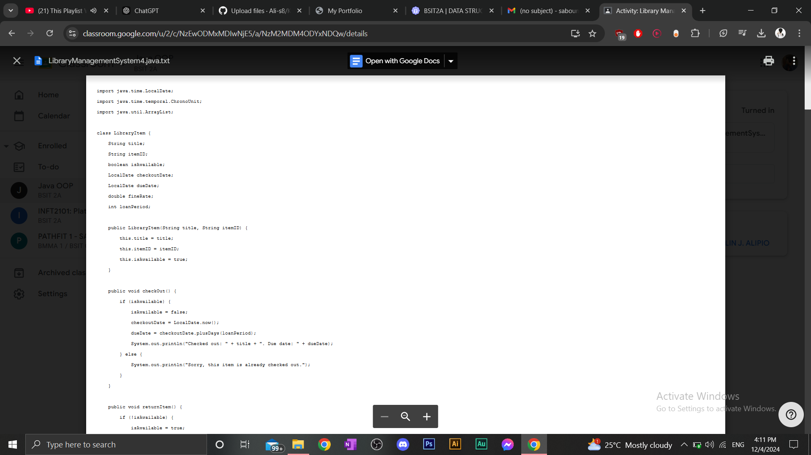
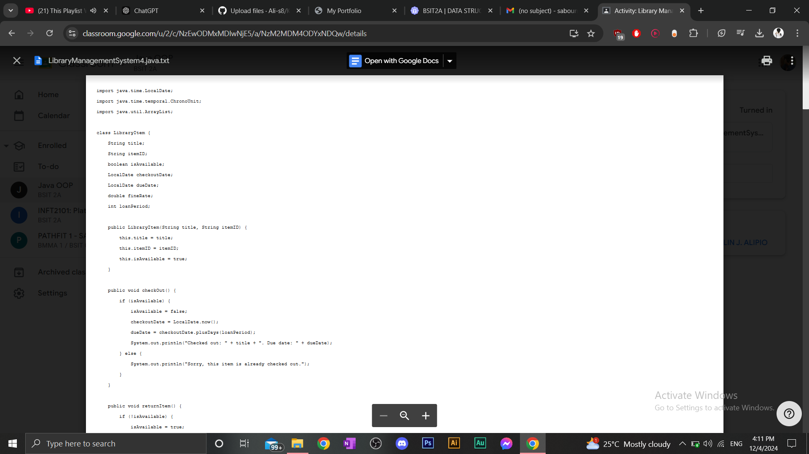

About Me

Hello! My name is Ali Omar Saboune. I was born in UAE on March 21st, 2004. I’m half Lebanese and half Filipino, and currently living in Dasmariñas, Cavite, Philippines. I am pursuing a degree in BSIT as an irregular student taking both 2nd and 3rd year subjects. This semester, I’ve worked on several projects that showcase my progress as a student and aspiring IT professional.


 
